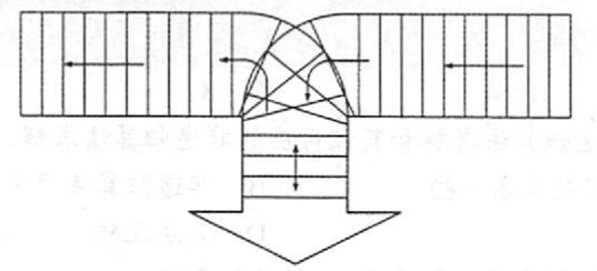

2022.09.12
#include<stdio.h>
#include<stdbool.h>
#include<string.h>
#define MaxSize 20
typedef struct{
char data[MaxSize];
int top;
}SqStack;
// 初始化
void InitStack(SqStack &S){
S.top=-1;
}
// 判断栈是否为空
bool EmptyStack(SqStack S){
return S.top==-1;
}
// 入栈
bool Push(SqStack &S, char x){
return S.top==MaxSize-1 ? false : S.data[++S.top]=x;
}
// 出栈
bool Pop(SqStack &S,char &x){
return S.top==-1 ? false : x=S.data[S.top--];
}
/*
考试时这样写
#define MaxSize 20
typedef struct{
char data[MaxSize];
int top;
}SqStack;
// 初始化栈
void InitStack(SqStack &S)
// 判断栈是否为空
bool EmptyStack(SqStack S)
// 入栈
bool Push(SqStack &S,char x)
// 出栈
bool Pop(SqStack &S,charchar &x)
*/
bool BracketCheck(char str[]){
SqStack S;
InitStack(S);
char x;
for(int i=0;i<strlen(str);i++){
printf("%c",str[i]);
if(str[i]=='('||str[i]=='['||str[i]=='{')
Push(S,str[i]);
if(str[i]==')'||str[i]==']'||str[i]=='}'){
if(EmptyStack(S))
return false;
Pop(S,x);
if(str[i]==')' && x!='(') return false;
if(str[i]==']' && x!='[') return false;
if(str[i]=='}' && x!='{') return false;
}
}
return EmptyStack(S);
}
int main(){
char *a;
strcpy(a,"{}[]");
printf("\n判断匹配: %d\n",BracketCheck(a));
return 0;
}
精要总结：
- 中缀转前缀表达式，左优先
- 中缀转后缀表达式，右优先
- 后缀计算：1 2 +，看到运算符，弹出两个数计算；看到数字，压入栈中
- 前缀计算：+ 1 2，看到第二个数字，弹出运算符；看到运算符，压入栈中
下面是中缀转后缀的C语言实现
int GetPriority(char c){
switch (c) {
case '(': return 0;
case '+': return 1;
case '-': return 1;
case '*': return 2;
case '/': return 2;
case ')': return 3;
}
printf("Wrong!\n");
return -1;
}
char* ToInversePoland(char c0[]){
/*
1. 遇到操作数 ->加入后缀表达式
2. 遇到‘(’入栈, 遇到‘)’依次弹出站内运算符加入后缀表达式直到‘(’. (注意, 括号不入后缀表达式)
3. 遇到运算符. 依次弹出运算及高于或等于当前运算符的所有运算符, 直到括号或栈空为止. 然后把当前运算符入栈.
4. 处理完所有字符后, 把栈中运算符依次弹出.
*/
char c[64] = "(";
strcat(c,c0);
strcat(c,")");
static char InversePo[64] = ""; // 后缀表达式
int index = 0;
LinkStack stack;
LinkStackInit(stack);
Element e;
for(int i=0; i<strlen(c);i++){
if('0'<=c[i]&&c[i]<='9'){
InversePo[index++] = c[i];
}else if(c[i]=='('){
LinkStackEn(stack, ele_build((int)c[i]));
}else if(c[i]==')'){
while(LinkStackDe(stack,e)){
if(ele_get_weight(e)!='(')
InversePo[index++] = (char)ele_get_weight(e);
else break;
}
}else if(c[i]=='+'||c[i]=='-'||c[i]=='*'||c[i]=='/'){
while(LinkStackGet(stack,e)){
if(GetPriority((char)ele_get_weight(e))< GetPriority(c[i]))break;
LinkStackDe(stack,e);
if((char)ele_get_weight(e) != '(')
InversePo[index++] = (char)ele_get_weight(e);
}
LinkStackEn(stack, ele_build((int)c[i]));
}else{
return NULL;
}
}
InversePo[index]='\0';
return InversePo;
}
int main(){
char s1[] = "1+(1+2)/3+(2-1)\0";
printf("中缀转后缀 %s = %s\n",s1,ToInversePoland(s1));
// 中缀转后缀 1+(1+2)/3+(2-1) = 112+3/+21-+
}
略
略
【答案】：D
【答案】：abc+*d-，B
【答案】：C
【答案】：
A：[AB] [-*(]，溢出
B：[{A-BC*-D-}] [] -> B
int f(int x) (
return ((x>0) ? x*f(x-1) : 2);
}
int i;
i=f(f(1));
A. 2 B. 4 C. 8 D. 无限递归
【答案】：B
stateDiagram-v2
f(f(1))=f(2)[4] --> f(1)[2]
f(1)[2] --> f(0)[2]
f(f(1))=f(2)[4] --> f(1)[2]
【答案】：B
【答案】：C
【答案】：B
【答案】：A
【2009 统考真题】为解決计算机主机与打印机速度不匹配的问题：通常路置一个打印数据缓冲区，主机将要输出的数据依次写入该缓沖区，而打印积则依天从该缓沖区中取出数据。该缓冲区的逻辑结构应该是（ ）。 A. 栈 B. 队列 C. 树 D. 图
【答案】：B
【2012 统考真题】已知操作符包括+,-,*,/,(,)。将中级表达式 a+b-a*((c+d)/e-f)+g转换为等价的后级表达式 ab+acd+e/f-*-g+时，用栈来存放暂时还不能确定运算次序的操作符。栈初始时为空时，转换过程中同时保存在栈中的操作符的最大个数是( )。
A. 5
B. 7
C. 8
D. 11
【答案】：+g,max: 5
[]
ab+acd+e/f-*-g+
A
【2014 统考真题】假设栈初始为空，将中缀表达式a/b+(c*d-e*f)/g转换为等价的后缀表达式的过程中，当扫描到f时，栈中的元素依次是( )。
A. +(*-
B. +(-*
C. /+(*-*
D. /+-*
【答案】：f)/g，B
[+(-*]
ab/cd*e
【2015统考真题】己知程序如下：
int S(int n)
return (n<=0) ? 0 : s(n-1)+n;
void main()
cout<< S(1);
程序运行时使用栈来保存调用过程的信息，自栈底到栈顶保存的信息依次对应的是(）。
A. main()-s(1)-s(0)
B. S(0) -S(1) -main()
C. main()-s(0)-S(1)
D. S(1) -S (0) -main ()
【答案】：[main() - S(1) - S(0)]，A
bool valid(char c[]){
Stack S;
for(int i;i<strlen(c);i++){
if(c[i]=='('||c[i]=='['||c[i]=='{')
Push(S,c[i]);
else if(c[i]==')')
if(Pop(S)!='(') return false;
else if(c[i]==']')
if(Pop(S)!='[') return false;
else if(c[i]=='}')
if(Pop(S)!='{') return false;
}
return IsEmpty(S);
}
按下图所示铁道进行车厢调度（注意，两侧铁道均为单向行驶道，火车调度站有一个用于调度的“栈道”），火车调度站的入口处有n节硬座和软座车厢（分别用H和S 表示）等待调度，试编写算法，输出对这n节车厢进行调度的操作(即入栈或出栈操作）序列，以使所有的软座车厢都被调整到硬座车厢之前。

void Transform(LinkList &L, LNode *S, LNode *H,int n){
Stack T;
for(int i; i<n; i++)
if(IsH(GetItemByIndex(L,i)))
Push(T,PopItemByIndex(L,i);
while(!IsEmpty(T))
AddItemAtLast(L,Pop(T));
}
利用一个栈实现以下递归函数的非递归计算：
Pn = 1, n=0 Pn = 2x, n=1 Pn = 2xP_{n-1}(x) - 2(n-1)P_{n-2}(x), n>1
int f(n,x){
if(n==0) return 1;
if(n==1) return 2*x;
return 2*f(n-1,x) - 2*(n-1)f(n-2,x);
}
typedef struct {
int index;
int value;
} Element;
int f(n,x){
Stack S;
Element e;
int index;
int ans1=1;
int ans2=2*x;
for(int i=n;i>2;i--){
Push(S,{i:index++});
}
while(!IsEmpty(S)){
e = Pop(S);
e.value = 2*x*ans2 -(e.index - 1)*ans1;
ans1 = ans2;
ans2 = e.value;
}
if(n==0) return ans1;
return ans2;
}